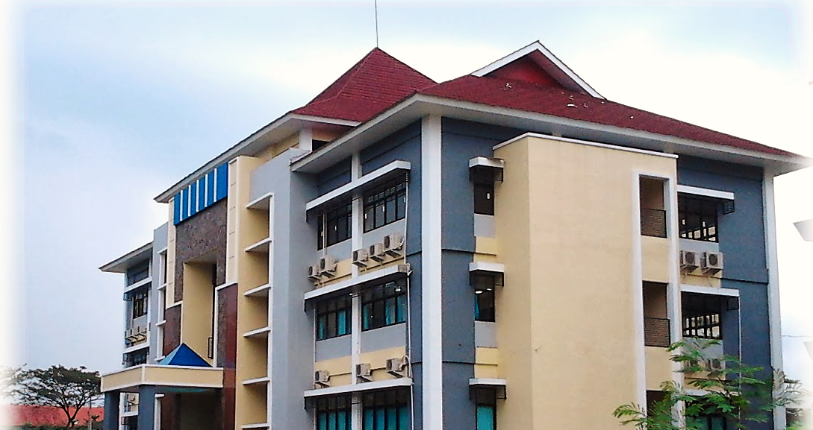
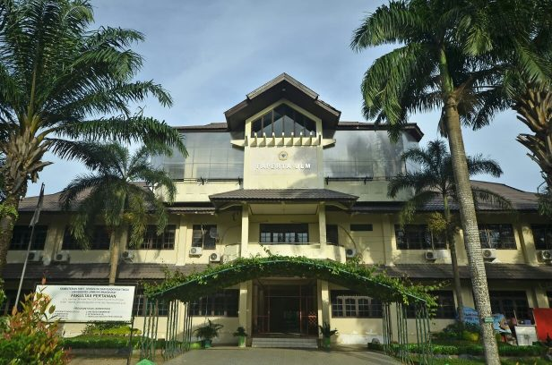
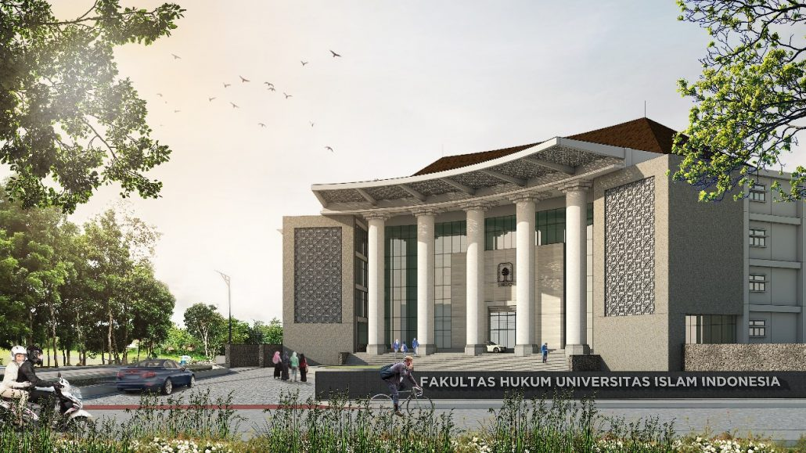
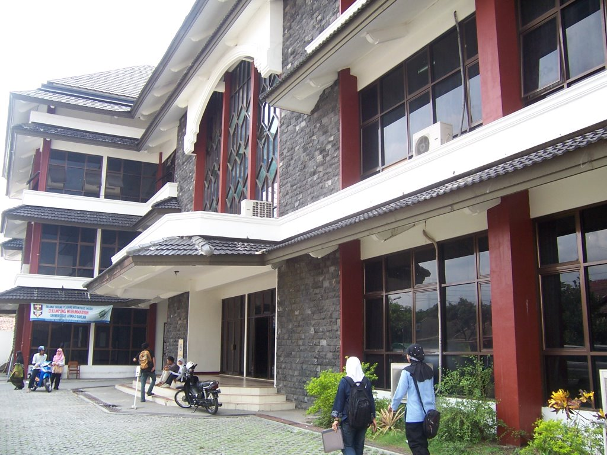

Fakultas Teknik

Ilmu Teknik adalah bidang pelajaran yang mempelajari implementasi teknologi baru dalam sektor teknik seperti manufaktur, pemeliharaan dan manajemen. Jurusan ini menyediakan Program Sarjana, Pasca Sarjana dan Magang.
Jika Anda menyenangi teknik dan teknologi, dan mempunyai minat di bidang sains, jurusan ini mungkin cocok untuk Anda.
Jadwal perkuliahan jurusan ini sangat padat. Selain menghadiri kelas kuliah, para mahasiswa akan banyak terlibat dalam kegiatan praktek di workshop, sehingga selain menguasai materi pelajaran dan kemampuan praktek, para mahasiswa dituntut untuk pintar mengatur waktu. Selain itu, para mahasiswa juga diharuskan untuk mengambil penempatan kerja.
Ilmu Teknik bisa diaplikasikan di berbagai bidang, tidak hanya tebatas di bidang teknik. Ini dikarenakan semasa kuliah, para mahasiswa juga mempelajari tentang Teknologi Informatika dan Hukum. Sehingga para lulusan jurusan ini bisa diterima bekerja di bidang hukum paten, konstruksi, hubungan massa ataupun di departemen teknologi informatika.
Walaupun demikian, mayoritas lulusan tetap memilih untuk memilih profesi sebagai insinyur mekanik ataupun insinyur pemeliharaan (maintenance). Gaji awal rata-rata untuk seorang insinyur mekanik adalah £20,000 - £28,000 per tahun di Inggris. Mereka menggunakan solusi yang efisien bagi pengembangan produk dan mesin. Sedangkan untuk seorang insinyur pemeliharaan, gaji awal rata-rata berkisar antara £20,000 – £24,000 per tahun. Mereka bertanggung jawab akan perawatan dan pemeliharaan mesin-mesin dan peralatan lainnya.
Fakultas Pertanian

Ilmu Pertanian tidak hanya mempelajari cara membudidayakan tanaman dan hewan melainkan juga mempelajari bagaimana cara mengolah hasil budidaya dengan penerapan teknologi. Lebih lanjut, para pelajar juga akan mendapatkan ilmu tentang cara mengelola perniagaan hasil budidaya. Para pelajar akan mendapatkan ilmu agraris atau pertanian (arti luas) mulai dari hulu hingga hilir atau dikenal juga “from farm to the table”.
idang pertanian adalah bidang yang memiliki kontribusi yang sangat besar dan massif bagi kehidupan manusia.
Kebutuhan primer manusia terutama pangan dan sandang hanya bisa dipenuhi melalui hasil pertanian. Perkembangan populasi manusia di muka bumi ini membuat sumber daya alam biotik harus dibudidayakan sehingga hasilnya lebih besar dan mencukupi kebutuhan lebih banyak manusia.
Fakultas Hukum

Jurusan Ilmu Hukum mempelajari berbagai sistem hukum yang berkaitan dengan kehidupan kemasyarakatan maupun kegiatan bisnis. Di Ilmu Hukum, Quipperian juga belajar mengenai perundang-undangan termasuk di dalamnya hukum dasar (konstitusi, hukum perdata, hukum dagang, hukum tata negara, hukum pidana, hukum tata pidana) hingga hukum internasional dengan cakupan yang cukup luas.
Pengetahuan dan Keahlian
Kemampuan menghafal,Kemampuan berpikir kritis,Kemampuan berpikir logis,Kemampuan menganalisis,Kemampuan menyelesaikan masalah,kemampuan mengutarakan pendapat secara lugas komunikatif.
Fakultas Mipa

Di fakultas MIPA tersedia banyak jurusan yang sesuai dengan minat dan kemauan belajar kamu. Setiap perguruan tinggi memiliki bidang studi yang berbeda-beda. Namun pada umumnya beberapa jurusan ini yang masuk dalam fakultas MIPA, yaitu:
1. Matematika
2. Fisika
3. Kimia
4. Biologi
5. Statistika
6. Astronomi
7. Bioteknologi
8. Geofisika
9. Meteorologi.
<